Giao Thông Đồng Nai - Đầu Mối Giao Thông Quan Trọng
Thế Mạnh, Vai Trò và Triển Vọng
Hiện tại, Đồng Nai được đánh giá rất cao về giao thông vì Đồng Nai có hệ thống giao thông khá phát triển và giữ vai trò quan trọng trong mạng lưới giao thông của vùng Đông Nam Bộ. Do nằm gần TP.HCM và là nơi tập trung nhiều khu công nghiệp, Đồng Nai có nhu cầu vận chuyển hàng hóa rất lớn, hiện nay có nhiều lợi thế nổi bật, đang được đầu tư và hoàn thiện theo hướng đồng bộ, hiện đại và tăng cường kết nối vùng. Đồng Nai có hệ thống giao thông đa dạng bao gồm đường bộ, đường hàng không, đường sắt và đường thủy. Trong tương lai Đồng Nai được kỳ vọng sẽ trở thành trung tâm kết nối vùng hiện đại với đầy đủ phương thức vận tải, giúp giảm ùn tắc, giảm chi phí logistics và thúc đẩy kinh tế bứt phá. Chúng ta cùng điểm qua và tìm hiểu các loại hình giao thông ở Đồng Nai nhé!
Giao Thông Đường Bộ
Đồng Nai có hệ thống đường bộ phát triển khá đa dạng, giữ vai trò kết nối tỉnh với Thành phố Hồ Chí Minh, Bà Rịa – Vũng Tàu, Bình Dương và các tỉnh thuộc vùng Đông Nam Bộ. Mạng lưới này gồm các tuyến quốc lộ, cao tốc, đường tỉnh và đường đô thị, phục vụ cả nhu cầu đi lại của người dân và vận chuyển hàng hóa
Các cao tốc, quốc lộ huyết mạch của Đồng Nai:
Cao tốc Phan Thiết - Dầu Giây
Vành đai 3 TP.HCM – đoạn Tân Vạn – Nhơn Trạch
Cao tốc Biên Hòa - Vũng Tàu
Dự án thành phần 1
Dự án thành phần 2
Dự án thành phần 3
Quốc Lộ 1A
Quốc Lộ 51

(Cao tốc Phan Thiết - Dầu Giây)
Vào 30/9/2020, dự án đường cao tốc Phan Thiết - Dầu Giây chính thức được khởi công do Bộ Giao thông Vận tải đại diện chủ đầu tư với tổng đầu tư hơn 12.500 tỷ đồng ,Với chiều dài khoảng 99km ❨ đi qua Đồng Nai 51,5 km và Bình Thuận 47,5 km❩, ngày 29/4/2023 chính thức khánh thành và đưa vào vận hành. Đường cao tốc Phan Thiết – Dầu Giây ra đời như một phần của Dự án xây dựng đường cao tốc Bắc - Nam phía Đông, nhằm giải quyết tình trạng quá tải nghiêm trọng trên Quốc lộ 1A kết nối vùng Đông Nam Bộ với Nam Trung Bộ, rút ngắn thời gian di chuyển giữa TP.HCM, Đồng Nai và Bình Thuận, tăng khả năng kết nối Đồng Nai với khu vực Nam Trung Bộ, hỗ trợ vận chuyển hàng hóa, phát triển du lịch và logistics.
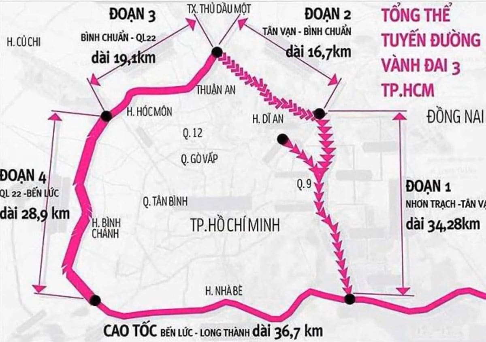
(Tân Vạn - Nhơn Trạch)
Vào 18/06/2023, dự án Vành đai 3 TP.HCM chính thức khởi công do Ban Quản lý Dự án Mỹ Thuận (Bộ Giao thông vận tải) làm chủ đầu tư với tổng mức đầu tư khoảng 75.378 tỷ đồng, dài khoảng 76,34 km, đi qua TP.HCM, Đồng Nai, Bình Dương và Long An. Trong đó Đồng Nai có 2 dự án bao gồm Dự án thành phần 1A – Tân Vạn – Nhơn Trạch và Dự án thành phần giải phóng mặt bằng trên địa bàn Đồng Nai
Dự án thành phần 1A – Tân Vạn – Nhơn Trạch
Dự án thuộc Vành đai 3 TP.HCM chính thức được khởi công vào ngày 24/09/2022, dài khoảng 8,14–8,22 km, trong đó khoảng 6,3 km qua Đồng Nai, phần còn lại qua TP.HCM với tổng mức đầu tư khoảng 6,955 tỷ đồng, khánh thành vào 19/8/2025 và được đưa vào khai thác từ 7h ngày 20/8/2025. Dự án có vai trò quan trọng: Tạo thêm tuyến vận chuyển hàng hóa, hỗ trợ logistics và thương mại, phân luồng giao thông từ xa, góp phần giảm áp lực cho các tuyến đường nội đô TP.HCM.
Dự án thành phần giải phóng mặt bằng trên địa bàn Đồng Nai ❨ bồi thường ❩
Dự án này không phải là một tuyến đường hay cây cầu riêng, mà là phần bồi thường, hỗ trợ, tái định cư và thu hồi đất để phục vụ việc xây dựng Vành đai 3 trên địa bàn tỉnh.
Tham khảo thêm
(Cao Tốc Biên Hòa - Vũng Tàu)
Vào 18/6/2023, dự án thuộc địa bàn Đồng Nai và TP.HCM ❨trước đây là Đồng Nai và Bà Rịa – Vũng Tàu ❩ chính thức được đưa vào khởi công với tổng mức đầu tư ban đầu 17.837 tỷ đồng, có chiều dài khoảng 53,7 km được chia ra làm 3 dự án thành phần:
Với tổng chiều dài 16km thuộc địa bàn TP.Đồng Nai, tổng mức đầu tư ban đầu khoảng 6.012 tỷ đồng do Ban Quản lý dự án đầu tư xây dựng tỉnh Đồng Nai làm chủ đầu tư. Đóng vai trò là trục giao thông chiến lược giúp giải tỏa áp lực quá tải nghiêm trọng cho Quốc lộ 51, đồng thời kết nối trực tiếp Đồng Nai với hệ thống giao thông vùng trọng điểm phía Nam và sân bay Long Thành
Với tổng chiều dài khoảng 18,2 km thuộc địa bàn TP.Đồng Nai, tổng mức đầu tư ban đầu khoảng 6.852 tỷ đồng do Bộ Giao thông vận tải trước đây; Ban Quản lý dự án 85 đại diện chủ đầu tư. Đây là đoạn đặc biệt quan trọng vì kết nối dự án thành phần 1 với dự án thành phần 3, tạo thành tuyến liên tục từ Biên Hòa xuống khu vực Bà Rịa - Vũng Tàu
Với tổng chiều dài khoảng 19,5 km thuộc địa bàn khu vực Bà Rịa – Vũng Tàu trước đây, nay thuộc TP.HCM, tổng mức đầu tư ban đầu khoảng 4.964 tỷ đồng do UBND tỉnh Bà Rịa – Vũng Tàu trước đây làm chủ đầu tư. Giai đoạn này đóng vai trò là đoạn tuyến kết nối liên thông quan trọng giúp hoàn thiện trục giao thông liền mạch từ Đồng Nai đi qua khu vực Bà Rịa - Vũng Tàu, qua đó gián tiếp thúc đẩy kinh tế - xã hội của vùng
Quốc Lộ 1A là tuyến giao thông huyết mạch quan trọng nhất của Việt Nam, nối liền từ Bắc vào Nam
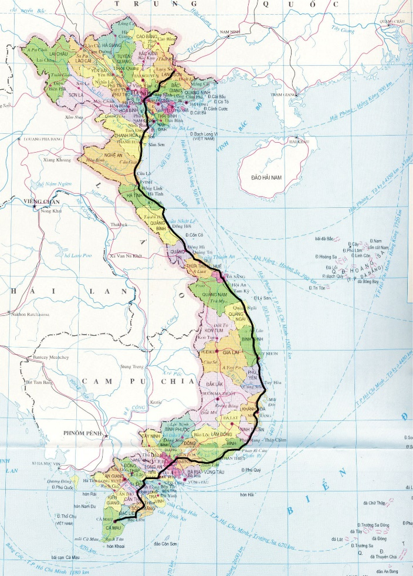
(Quốc Lộ 1A)
Đối với Đồng Nai, QL1A có vai trò đặc biệt quan trọng vì tuyến đường đi xuyên qua khu vực trung tâm công nghiệp – đô thị của tỉnh, kết nối Đồng Nai với TP.HCM ở phía Tây và Bình Thuận ở phía Đông.
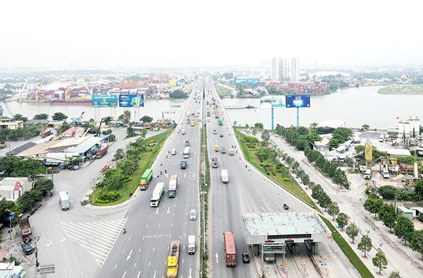
(Quốc Lộ 1A)
Và trong tương lai, quy hoạch tỉnh Đồng Nai điều chỉnh đến năm 2030, tầm nhìn 2050 cũng định hướng phát triển đồng bộ cao tốc, quốc lộ, hạ tầng kết nối vùng, trung tâm logistics và các loại hình giao thông khác, gắn kết sân bay, cảng đường thủy và cảng biển, điều này cho thấy tương lai QL1 sẽ không hoạt động độc lập mà nằm trong mạng lưới giao thông đa phương thức của Đồng Nai

(Quốc Lộ 51)
Quốc lộ 51 đoạn qua Đồng Nai là tuyến giao thông huyết mạch dài khoảng hơn 40km, điểm đầu bắt đầu tại Ngã tư Vũng Tàu ❨Biên Hòa, Đồng Nai❩. Là sương sống kinh tế kết nối vùng: QL51 liên kết trực tiếp vùng tam giác kinh tế trọng điểm phía Nam gồm TP.HCM – Đồng Nai – Bà Rịa - Vũng Tàu, là cửa ngõ ra cảng biển & sân bay: Là đường vận tải chính dẫn ra cụm cảng nước sâu Cái Mép – Thị Vải và liên kết trực tiếp với Cảng hàng không quốc tế Long Thành
Giao Thông Hàng Không
Trước đây, Đồng Nai chủ yếu phụ thuộc vào hạ tầng đường bộ và đường thủy, còn hàng không dân dụng chưa phát triển trực tiếp trên địa bàn mà dựa hoàn toàn vào Sân bay Tân Sơn Nhất (TP.HCM). Hiện nay, hạ tầng hàng không đang được xây dựng tốc lực để trở thành trục giao thông trọng điểm của toàn tỉnh, Đồng Nai được định hướng phát triển không gian đô thị, công nghiệp và dịch vụ lấy các hạt nhân hàng không làm trung tâm kết nối. Hàng không giúp Đồng Nai tháo gỡ điểm nghẽn về giao thông đối ngoại, mở ra kết nối thẳng tới các trung tâm kinh tế toàn quốc và quốc tế mà không phải chịu áp lực quá tải qua nội đô TP.HCM.
2 Sân bay mà Đồng Nai đang có:
Sân bay Biên Hòa
-
Sân bay Biên Hòa là một trong những căn cứ không quân quan trọng và lâu đời nhất tại Việt Nam, đóng vai trò chiến lược về cả quân sự, lịch sử lẫn định hướng phát triển kinh tế - xã hội của tỉnh Đồng Nai. Nằm trên địa bàn phường Tân Phong và phường Trung Dũng, thành phố Biên Hòa, tỉnh Đồng Nai.
- Là căn cứ chiến lược phòng thủ hướng Nam của Tổ quốc, chịu trách nhiệm tuần tra, bảo vệ chủ quyền biển đảo, thềm lục địa và các mục tiêu trọng yếu khu vực Đông Nam Bộ và là nơi diễn ra các hoạt động huấn luyện bay, sẵn sàng chiến đấu, diễn tập cứu hộ cứu nạn của lực lượng Không quân Nhân dân Việt Nam.
Sân bay Long Thành (Trọng điểm)
- Giai đoạn 1 (2020 - 2025): Xây dựng 1 đường băng (4.000 m x 75 m), 1 nhà ga hành khách với công suất 25 triệu khách/năm và 1,2 triệu tấn hàng hóa/năm;
- Giai đoạn 2 (2025 - 2035): Bổ sung thêm 1 đường băng và 1 nhà ga, nâng công suất của sân bay Long Thành lên 50 triệu khách/năm;
- Giai đoạn 3 (sau 2035): Hoàn thiện toàn bộ sân bay với 4 đường băng và 4 nhà ga, đạt công suất 100 triệu khách/năm và 5 triệu tấn hàng hóa/năm.
Sân bay quốc tế Long Thành là dự án hạ tầng giao thông trọng điểm quốc gia lớn nhất Việt Nam, được định hướng trở thành một trung tâm trung chuyển hàng không quốc tế tầm cỡ khu vực Đông Nam Á. Nằm trên địa bàn huyện Long Thành, tỉnh Đồng Nai, cách TP. Hồ Chí Minh khoảng 40 km về phía Đông, cách TP. Biên Hòa khoảng 30 km. Với tổng diện tích quy hoạch: 5.000 ha. Dự án Sân bay quốc tế Long Thành có tổng mức đầu tư khái toán toàn bộ là 336.630 tỷ đồng do Tổng công ty Cảng hàng không Việt Nam (ACV) làm chủ đầu tư

(Sân bay Long Thành)
Sân bay Long Thành được chia ra làm 3 giai đoạn :
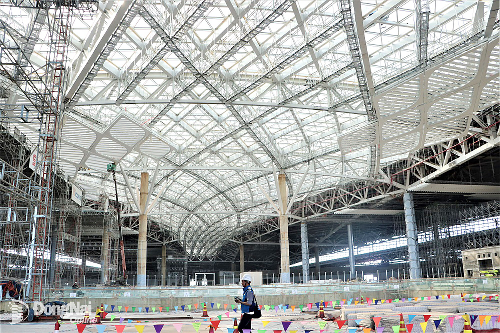
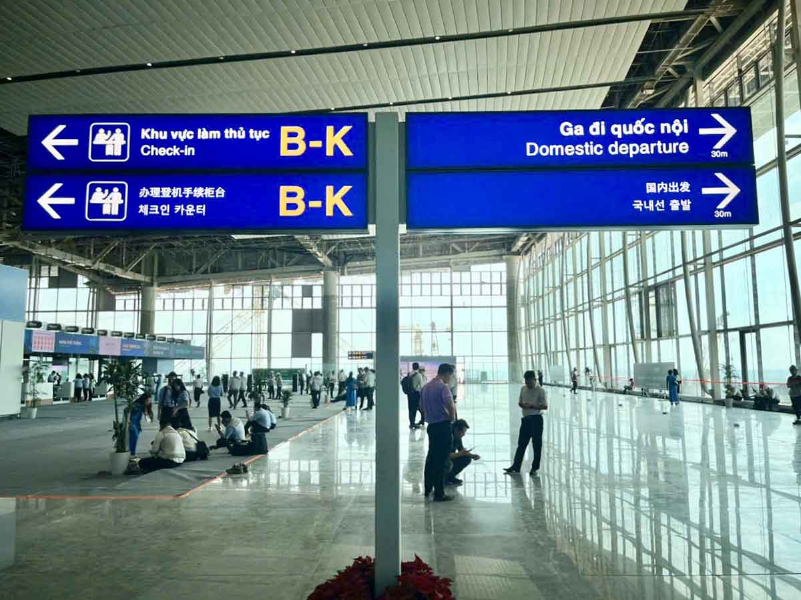
(Bên trong sân bay Long Thành)
Khi hoàn thiện toàn bộ các giai đoạn, Cảng hàng không quốc tế Long Thành sẽ trở thành siêu sân bay lớn nhất Việt Nam đạt cấp 4F theo tiêu chuẩn của Tổ chức Hàng không Dân dụng Quốc tế (ICAO). Được định hướng trở thành một trung tâm trung chuyển hàng không quốc tế tầm cỡ khu vực châu Á - Thái Bình Dương. Khi đi vào vận hành với công suất tối đa, sân bay có khả năng phục vụ tới 100 triệu lượt hành khách và tiếp nhận 5 triệu tấn hàng hóa mỗi năm. Về cơ sở hạ tầng kỹ thuật, quy mô thực tế bao gồm hệ thống 4 đường cất hạ cánh song song hiện đại, 4 nhà ga hành khách đồng bộ cùng các công trình phụ trợ quy mô lớn khác, đáp ứng năng lực khai thác cho các dòng máy bay thân rộng lớn nhất thế giới hiện nay như Airbus A380 hay Boeing 747.
Giao Thông Đường Sắt
Hệ thống giao thông đường sắt tại Đồng Nai giữ vai trò hạt nhân, kết nối hành lang kinh tế trọng điểm phía Nam giữa TP.HCM, Đồng Nai và các tỉnh Đông Nam Bộ. Mạng lưới đường sắt tại đây đang trải qua bước chuyển mình lớn từ đường sắt truyền thống sang đường sắt tốc độ cao và đường sắt đô thị (metro) gắn liền với đô thị Sân bay Quốc tế Long Thành.
Mạng lưới đường sắt hiện hữu (Đường sắt Bắc - Nam)
Quy hoạch kết nối Đường sắt đô thị (Metro)
Tuyến đường sắt Bắc - Nam (thống nhất) chạy qua địa phận tỉnh Đồng Nai dài khoảng 89 km, là trục vận tải hành khách và hàng hóa quan trọng kết nối vùng Đông Nam Bộ với Nam Trung Bộ và miền Bắc. Trong đó có đi qua ga Biên Hòa : Là ga hạt nhân lớn nhất tỉnh, phục vụ lượng lớn khách du lịch, người dân di chuyển đi TP.HCM và các tỉnh miền Trung/Bắc
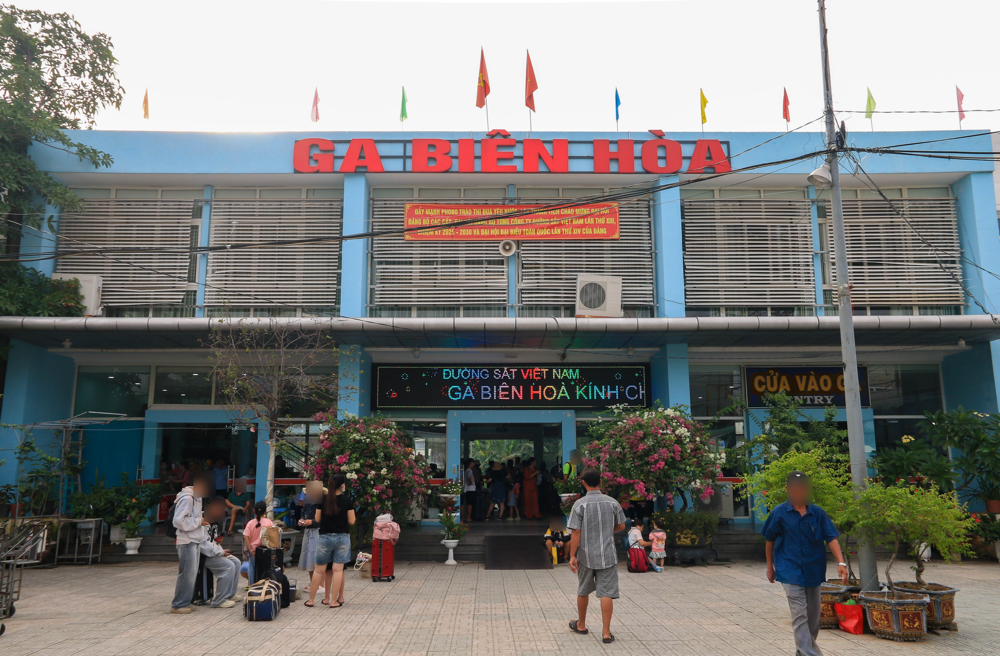
(Ga Biên Hòa)
Trong tương lai, sẽ kéo dài Metro Bến Thành - Suối Tiên (Metro số 1 TP.HCM): Đã phê duyệt chủ trương kéo dài tuyến từ Bến xe Miền Đông mới/Suối Tiên hướng về Trung tâm hành chính tỉnh và kết nối tiếp tới Sân bay Long Thành (Đã phê duyệt) nhằm tạo sự tiện lợi kết hợp với hiện đại hóa giữa hai dự án có triển vọng lớn trong tương lai.
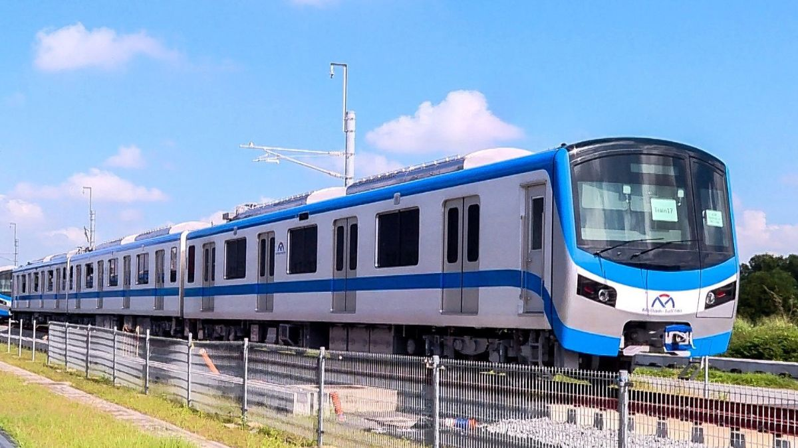
(Tàu Metro)
-> Vai trò: Đường sắt kết hợp hoàn hảo với đường cao tốc, cảng biển (Thị Vải - Cái Mép, Phước An) và đường hàng không (Sân bay Long Thành), giảm thiểu chi phí vận tải hàng hóa cho hàng chục khu công nghiệp.
Giao Thông Đường Thủy
Hệ thống giao thông đường thủy tại tỉnh Đồng Nai giữ vị trí cực kỳ quan trọng nhờ mạng lưới sông ngòi tự nhiên chằng chịt, kết nối trực tiếp vùng Đông Nam Bộ với TP.HCM và cụm cảng biển quốc tế. Đồng Nai hiện có 13 con sông và kênh với tổng chiều dài hơn 2,3 ngàn km, trong đó lớn nhất là sông Đồng Nai với chiều dài đoạn chảy qua địa bàn tỉnh khoảng 220km. Đây được xem là nguồn tài nguyên lớn để phát triển giao thông đường thủy.

(Sông Đồng Nai)
Mạng lưới sông ngòi
- Sông Đồng Nai: Trục đường thủy huyết mạch lớn nhất, kết nối Đồng Nai với Bình Dương, TP.HCM. Luồng sông rộng, độ sâu tốt cho phép tàu tải trọng lớn và sà lan container di chuyển từ các khu công nghiệp đến cụm cảng biển.
- Sông Nhà Bè - Thị Vải: Tuyến đường thủy nước sâu tiếp giáp khu vực phía Nam của tỉnh (huyện Nhơn Trạch, Long Thành), là cửa ngõ kết nối thẳng ra biển Đông và cụm cảng nước sâu Cái Mép - Thị Vải.
Hệ thống Cảng biển & Cảng thủy nội địa
- Cảng Phước An (Nhơn Trạch): Cảng biển lớn nhất tỉnh Đồng Nai, có khả năng đón tàu biển tải trọng lớn, giữ vai trò làm trung tâm logistics hậu phương quan trọng kết nối với Sân bay Long Thành và cụm cảng Cái Mép.
- Cảng Đồng Nai (Biên Hòa - Long Bình Tân): Cảng thủy nội địa/ICD chính chuyên xếp dỡ hàng container, hàng rời phục vụ vùng kinh tế trọng điểm Biên Hòa - Trảng Bom.
- Cảng Gò Dầu (Long Thành): Cảng chuyên dụng vận chuyển hóa chất, xăng dầu, hàng khô bách hóa.
Mạng lưới cảng thủy tại Đồng Nai được quy hoạch đồng bộ phục vụ nhu cầu xuất nhập khẩu của hàng chục khu công nghiệp:
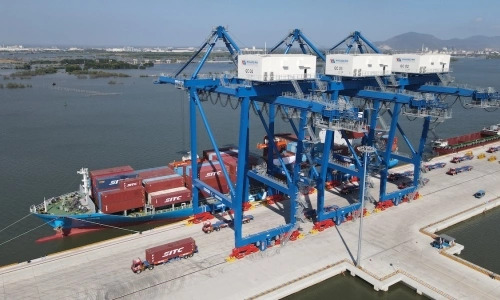
(Cảng Phước An)
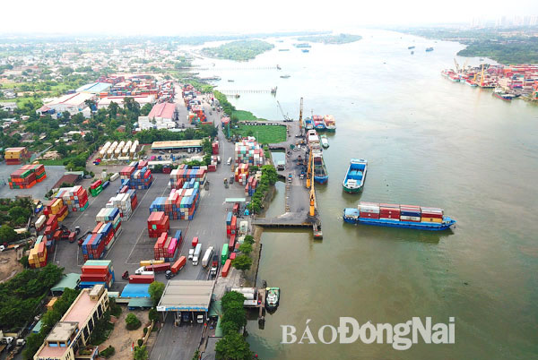
(Cảng Đồng Nai)
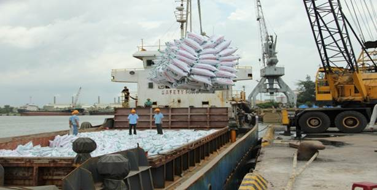
(Cảng Gò Dầu)
Giao Thông Đường Thủy có vai trò to lớn: giảm áp lực cho đường bộ bởi vận tải đường thủy giúp giảm tải đáng kể các tuyến quốc lộ trọng điểm (QL1A, QL51) và đường cao tốc. Tối ưu chi phí, khi chi phí vận chuyển sà lan, tàu thủy chở container thấp hơn 10–15% so với đường bộ, giúp tối ưu hóa chuỗi cung ứng cho các doanh nghiệp xuất nhập khẩu.
Hạ tầng
Hạ tầng Đô thị
- Các đô thị hạt nhân: Thành phố Biên Hòa (đô thị loại I), Thành phố Long Khánh, các đô thị mới như Nhơn Trạch, Long Thành.
- Hình thành các khu đô thị sinh thái, khu đô thị sân bay và hệ thống công viên cây xanh dọc sông.
Hạ tầng Kỹ thuật & Công nghiệp
Hạ tầng Khu công nghiệp (KCN)
Hạ tầng Năng lượng & Cấp điện
Hạ tầng Cấp thoát nước & Môi trường
Hạ tầng Viễn thông & Công nghệ thông tin
Hạ tầng Xã hội & Tiện ích Đô thị
- Nhà ở & Bất động sản: Phát triển mạnh chuỗi đô thị ven sông Đồng Nai và các khu dân cư hiện đại. Đồng thời, tỉnh đang đẩy nhanh tiến độ các dự án nhà ở xã hội và nhà ở công nhân nhằm đáp ứng nhu cầu cho lực lượng lao động khổng lồ.
- Y tế & Giáo dục: Sở hữu hệ thống bệnh viện đa khoa, chuyên khoa quy mô lớn (Bệnh viện Đa khoa Đồng Nai, Bệnh viện Nhi đồng Đồng Nai,...) cùng hệ thống các trường đại học, cao đẳng chất lượng cao cung cấp nguồn nhân lực cho vùng.
Đồng Nai có định hướng phát triển hệ thống đô thị thông minh, hiện đại và bền vững quanh trục sông Đồng Nai và khu vực phụ cận sân bay Long Thành. Có tốc độ đô thị hóa nhanh, không gian phát triển mở rộng, tính kết nối liên vùng cao.
Chuyển dịch từ công nghiệp truyền thống sang công nghiệp xanh, công nghệ cao, tiết kiệm tài nguyên và gắn với hệ sinh thái hàng không quanh Sân bay Long Thành
Là một trong những thủ phủ công nghiệp lớn nhất cả nước, hạ tầng các KCN tại Đồng Nai được đầu tư đồng bộ về điện, nước, xử lý chất thải và viễn thông, từng bước chuyển đổi sang mô hình KCN sinh thái / KCN xanh. Đồng Nai hiện nay có khoảng 59 khu công nghiệp đã được thành lập với tổng diện tích 21.581,22 ha nhưng khoảng 37 – 44 khu công nghiệp đang hoạt động.
Các khu công nghiệp lớn và tiêu biểu tại đây gồm có: Amata, Nhơn Trạch (I, II, III, V, VI), Long Thành, Giang Điền, Lộc An – Bình Sơn, và các khu công nghiệp thuộc khu vực sáp nhập như Becamex Bình Phước, Hoa Lư, Ledana,...

(1 KCN ở Đồng Nai)
Hệ thống nguồn và lưới điện ổn định, đảm bảo cung cấp liên tục cho sản xuất công nghiệp và đời sống dân sinh. Có nguồn điện đa dạng: Nhà máy thủy điện Trị An, các nhà máy nhiệt điện, điện khí (Dự án Điện khí Nhơn Trạch 3 & 4), cùng hệ thống điện mặt trời mái nhà tại các KCN với lưới điện 500kV, 220kV và 110kV phủ rộng toàn tỉnh.
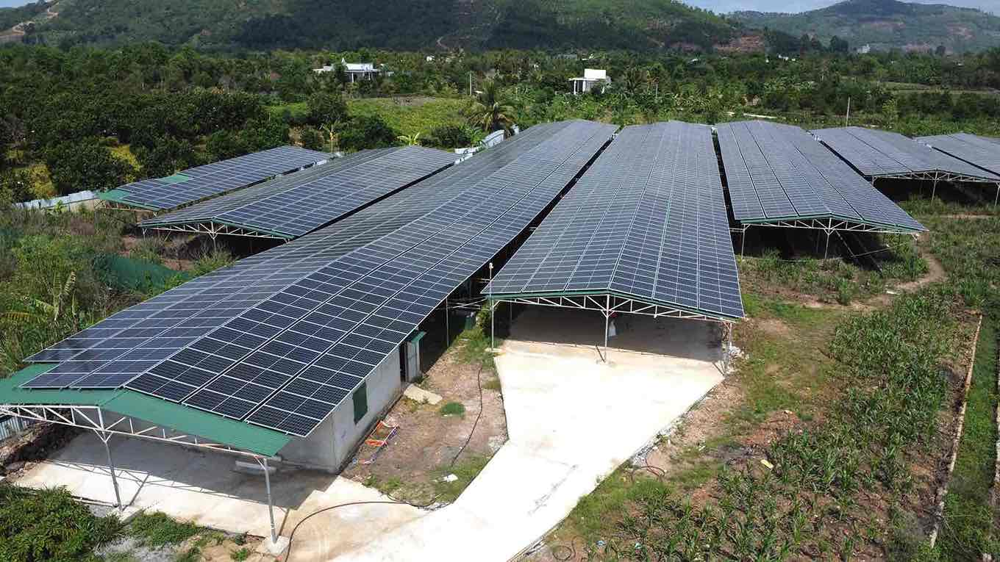
(Năng Lượng Mặt Trời)

(Thủy Điện Trị An)
Có khả năng tự cân đối và cung ứng điện năng lớn, tiên phong trong chuyển dịch năng lượng sạch. Là nền tảng vững chắc để phát triển ngành công nghiệp nặng, công nghệ cao và thu hút các dự án sản xuất lớn.
Hệ thống cấp nước sạch rộng khắp tỉnh, ưu tiên bảo vệ nguồn nước ngọt sông Đồng Nai và xử lý nước thải công nghiệp. Tỉnh đang đẩy mạnh đầu tư các dự án nâng công suất cấp nước sạch sinh hoạt và công nghiệp; đồng thời tập trung xây dựng hệ thống thu gom, xử lý nước thải sinh hoạt tại các đô thị lớn như Biên Hòa, Long Thành, Nhơn Trạch cùng với Các nhà máy nước lớn: Nhà máy nước Thiện Tân, Nhơn Trạch, Biên Hòa... với tổng công suất hàng trăm nghìn m3 ngày-đêm.
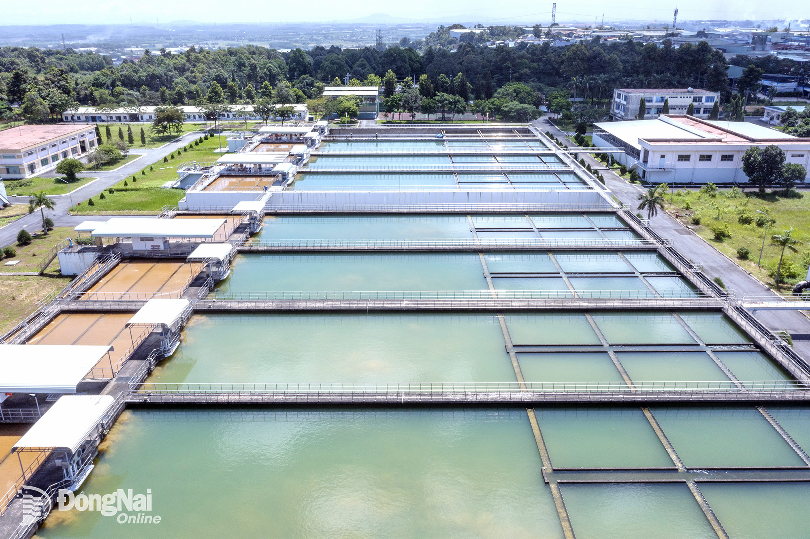
(Nhà máy nước Thiện Tân)
Có thế mạnh là trữ lượng nước ngọt dồi dào từ hồ Trị An và sông Đồng Nai. Có vai trò to lớn trong việc bảo đảm an ninh nguồn nước cho sinh hoạt, sản xuất công nghiệp và bảo vệ môi trường sinh thái lâu dài.
Hạ tầng lưới điện được phủ rộng đảm bảo cung cấp liên tục cho sản xuất; hạ tầng viễn thông/5G được phủ sóng diện rộng hướng tới mục tiêu xây dựng Đô thị thông minh (Smart City). Cùng với sự hợp tác mạnh mẽ với các tập đoàn viễn thông lớn (VNPT, Viettel, FPT) để nâng cấp hạ tầng công nghệ nhằm thúc đẩy chuyển đổi số trong quản lý nhà nước, hỗ trợ doanh nghiệp tối ưu hóa sản xuất thông minh và phục vụ nhu cầu kết nối của người dân.
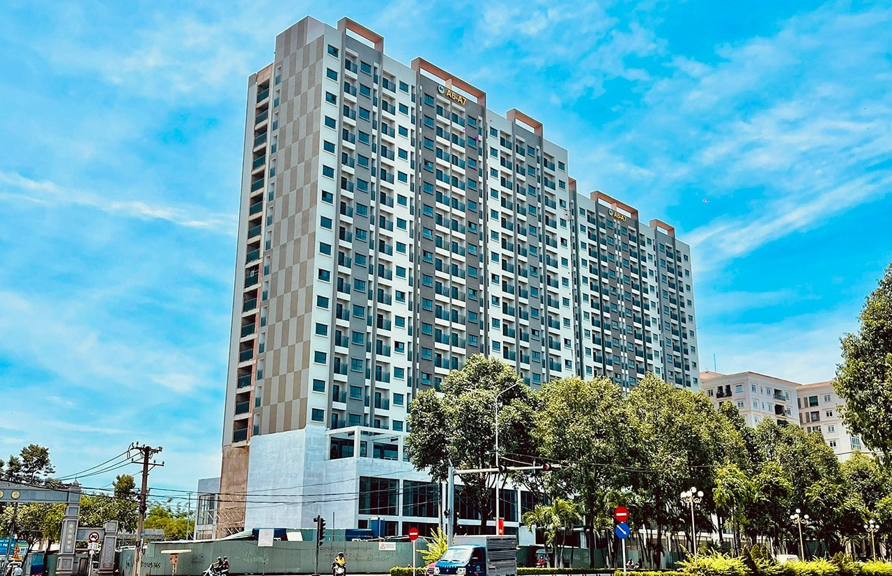
(Nhà ở xã hội)
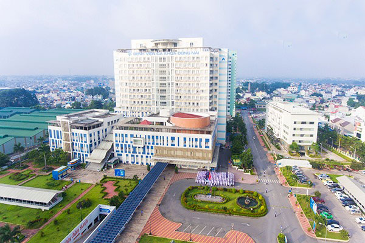
(Bệnh viện Đa khoa Đồng Nai)